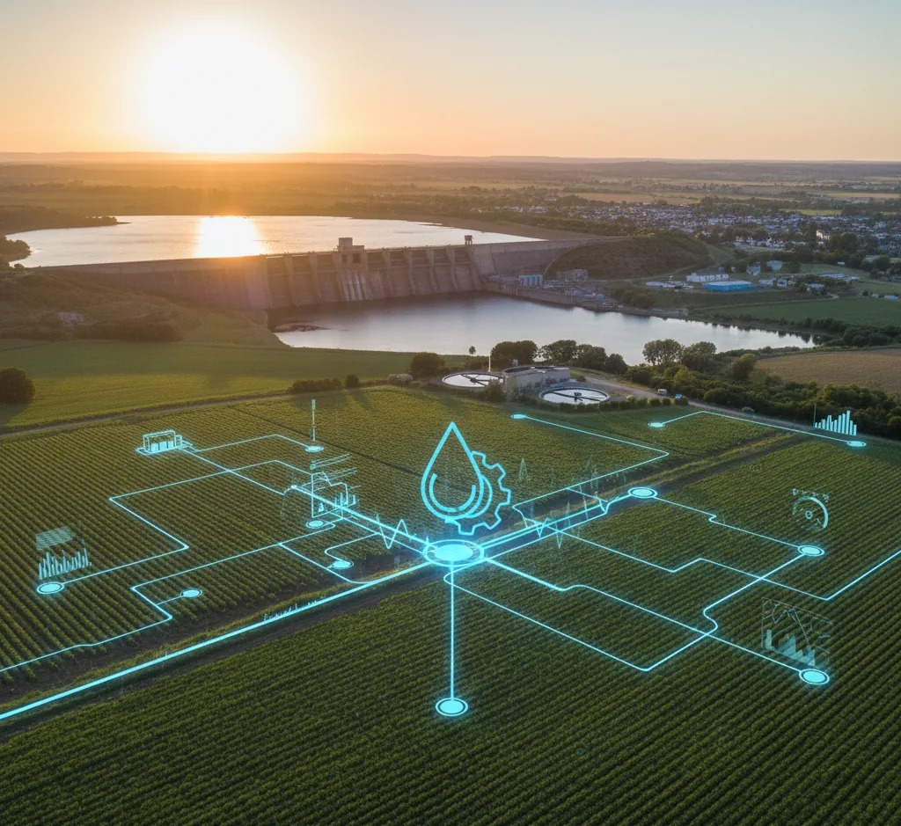
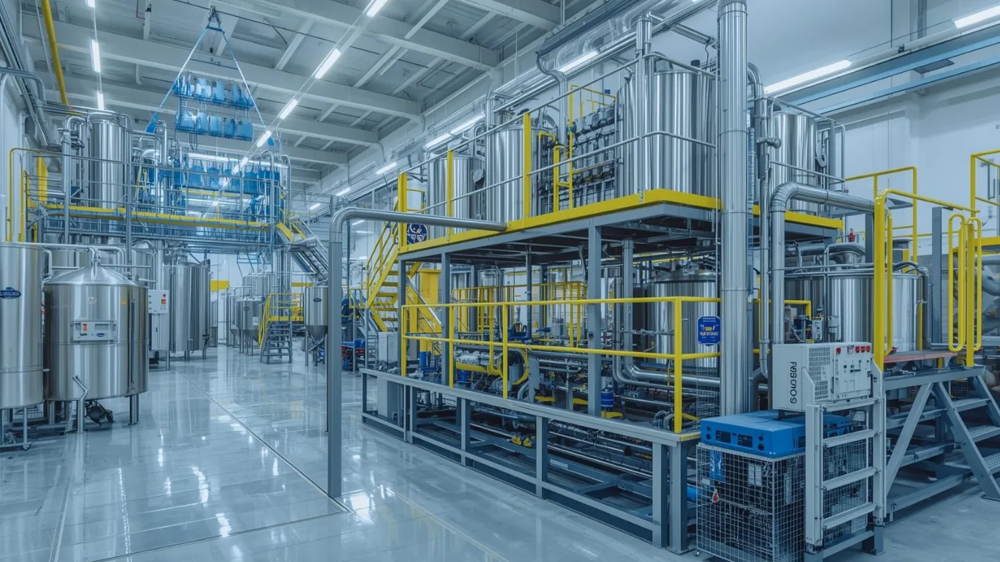

Real-world applications demonstrating how ONE Water supports smarter, more sustainable water management across industries


Let ONE Water help you build resilience, reduce waste, and meet compliance goals—starting today.
Get in touch